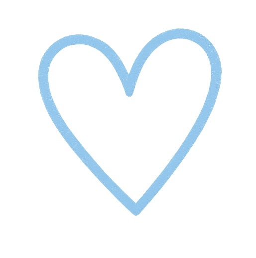
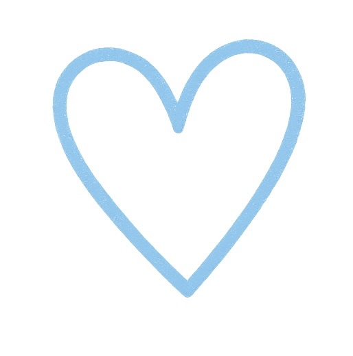
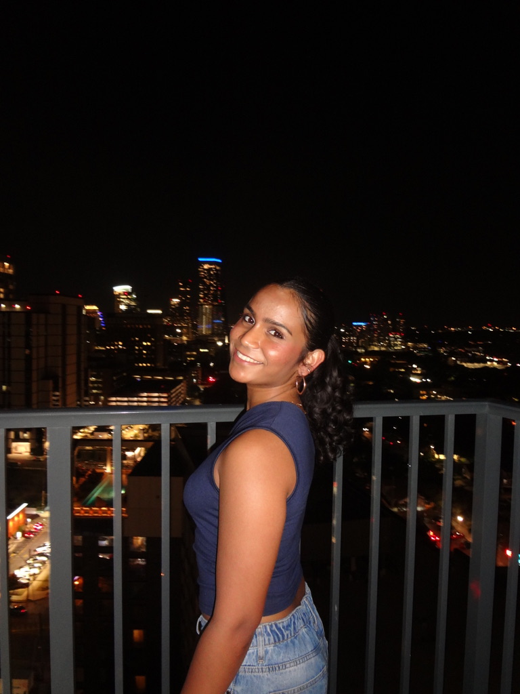

Full Name: Isha Jannu
Pronouns: she/her/hers
Current UT Address: 2011 San Antonio Street APT 1817 Austin, TX 78705
Phone Number: 2145856729
Email: ishajannu@utexas.edu
UT eid: isj283
Cumulative GPA: 3.23
Year: Sophomore
Major: Computer Science
As a sophomore, I want to meet people outside my major that value the same things as me, and I think the pillars in CLASS fulfill that perfectly. This was the one place, at your info sessions, that I felt was genuine, because I'm an introvert and you all truly made me feel comfy being myself. Beyond my roomies, I would love to find a group of cuties who I can call family to do cutie activities with! <3
I love that Bluebonnets has emphasis on DEI 💙
I'm really passionate about youth literacy after volunteer tutoring for years and I’m grateful to have grown up with an emphasis on the value of education. Realizing that illiteracy is a widespread epidemic made me want to advocate for it, by speaking at a TEDxYouth event and how technology can help us solve it together. Similarly, I also have spent many hours at the North Texas Food bank with my family and have continued that path of aiding food insecurity here at UT, through an org called ATX Food Hub. As the map improvement lead, we were able to provide a centralized hub to consolidate discounted/free food resources for students and Austinites– that’s why I’m especially excited if I continued that journey with Bluebonnets with Sunday Lunchbox. Additionally, I’m currently part of Project Advance Austin's working with the Dress for Success nonprofit for helping women achieve their professional dreams. I'm majoring in computer science simply because I want to develop tech to improve the everyday lives of people and that's honestly my life goal.
Most passionate right now: I’m passionate about living life to the fullest before I’m stuck in a corporate job (the 9-5 is overrated 🤨). Along those lines, I’m trying to find my personal brand and make time to find joy in the small things even with a busy schedule. For instance, I designed my room in my apartment (my first one 🥹) with a sage green theme, leaf fairy lights, and wooden/gold accents. I personally painted my decor on canvas and reconnecting with my creative side made me really happy– we get too caught up in life sometimes to make time for relaxing hobbies.
Book I’d write: My lifelong dream has been to write a book– I’m a HUGE fiction reader, especially fantasy, dystopia, sci-fi, and romance. Later in life, I would love to move to some remote town in Europe (Italy is a strong contender?? 😁) and write my novel in some small cottage and maybe do my tech job remotely. I would write an awesome sci-fi romance, the next Hunger Games or Fourth Wing– I’m always open to good book recs– and I live for a good plot. I’d probably write a romance set in space with some astronauts– I especially love Ali Hazelwood’s style of bridging romance and women in STEM for nerds like me 😋so I would probably implement something similar.
North Texas Food Bank, ATX Food Hub, Project Advance Austin, Dress for Success
Favorite thing about yourself: Spontaneity– because it enables me to make time for the people I care about...
Travel: I would go to a remote beach #ilovebartonsprings
Advice: YOLO...
Music: Throwback :))
$1000: Food & people
Animals fight: Mouse
Victorian Era: Vibrator
Most likely to: accidentally throw my phone in trash/dryer 😅
Favorite emojis: 😚😋